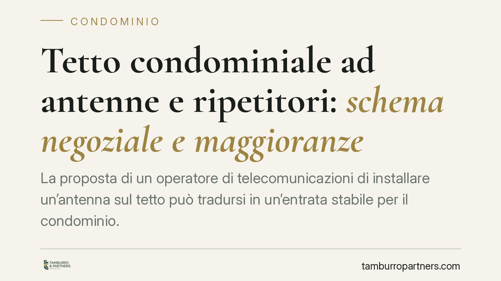

Tetto condominiale ad antenne e ripetitori: schema negoziale e maggioranze
La proposta di un operatore di telecomunicazioni di installare un'antenna sul tetto può tradursi in un'entrata stabile per il condominio. Ma prima della firma occorre scegliere lo schema giuridico corretto e verificare la maggioranza assembleare necessaria. Due aspetti che, se trascurati, espongono la delibera a impugnazione e il condominio a contenziosi su danni e ripristino.

Il fatto e perché conta
Sempre più spesso gli amministratori ricevono proposte da società di telecomunicazioni per collocare antenne e ripetitori sul lastrico solare. L'offerta è economicamente interessante, ma il contratto va costruito con attenzione: la qualificazione giuridica dell'operazione determina diritti, durata, adempimenti pubblicitari e — soprattutto — la maggioranza necessaria in assemblea.
Inquadramento normativo
Il lastrico solare, salvo titolo contrario, è parte comune ai sensi dell'art. 1117 c.c. La sua concessione a un terzo incide quindi sulla destinazione di un bene comune e rientra nelle attribuzioni dell'assemblea.
Due sono gli schemi negoziali possibili. Il primo è la locazione (o concessione in godimento): il condominio concede l'uso di una porzione del tetto a fronte di un canone, mantenendo la proprietà. Il secondo è la costituzione di un diritto di superficie ex art. 952 c.c., che consente al terzo di mantenere la proprietà dell'impianto separatamente dal suolo. Senza tale diritto opera il principio dell'accessione ex art. 934 c.c. — *superficies solo cedit* — per cui tutto ciò che viene stabilmente incorporato al suolo appartiene al proprietario di quest'ultimo. La scelta tra i due schemi non è formale: incide su durata, trascrivibilità e tutela dell'operatore.
Va chiarito un equivoco frequente. L'art. 1122-bis c.c., introdotto dalla L. 220/2012, disciplina gli impianti di ricezione televisiva e da fonti rinnovabili installati dai singoli condomini sulle parti comuni. Non regola la concessione commerciale del tetto a un operatore terzo, che resta governata dalle regole generali sui beni comuni.
Le maggioranze: il punto delicato
Qui si concentrano gli errori più ricorrenti. La concessione del lastrico a un terzo per finalità commerciali, specie se di lunga durata, eccede l'ordinaria amministrazione.
La locazione ultranovennale e, più in generale, gli atti eccedenti l'ordinaria amministrazione richiedono il quorum rafforzato dell'art. 1136, comma 5, c.c.: maggioranza degli intervenuti e almeno due terzi del valore dell'edificio (667 millesimi). Non è sufficiente la maggioranza semplice.
La locazione ultranovennale, inoltre, è soggetta a trascrizione ai sensi dell'art. 2643, n. 8, c.c. Un adempimento pubblicitario che va previsto e gestito contestualmente alla stipula.
Sulla qualificazione del lastrico e sulle maggioranze la giurisprudenza di legittimità ha espresso un orientamento consolidato nel tempo; è però opportuno diffidare di citazioni di massime riferite a materie diverse — ad esempio il riparto dei danni da infiltrazioni — che nulla dicono sulle maggioranze per la concessione a operatori. La prudenza impone di ancorare la delibera al dato normativo certo.
Implicazioni pratiche
Per il condominio la posta in gioco non è solo il canone. Un contratto mal costruito lascia scoperti nodi decisivi: responsabilità per i danni all'edificio, obblighi di manutenzione dell'impianto, accesso del personale tecnico, ripristino del lastrico alla scadenza. Un canone elevato non compensa l'assenza di queste clausole.
Per l'amministratore il rischio è duplice: deliberare con una maggioranza insufficiente — esponendo la delibera all'impugnazione ex art. 1137 c.c. — oppure firmare un testo squilibrato che scarica sul condominio oneri e rischi. Per i condomini dissenzienti o assenti resta la facoltà di impugnare nei trenta giorni previsti dalla norma.
Cosa fare in concreto
- Qualificate l'operazione prima di tutto: valutate se procedere con locazione o con costituzione di diritto di superficie ex art. 952 c.c., misurando le conseguenze su durata, trascrizione e proprietà dell'impianto.
- Verificate il quorum: per la locazione ultranovennale e per gli atti eccedenti l'ordinaria amministrazione serve la maggioranza degli intervenuti e almeno 667 millesimi (art. 1136, co. 5, c.c.).
- Trascrivete quando necessario: la locazione ultranovennale va trascritta ex art. 2643, n. 8, c.c.; organizzate l'adempimento contestualmente alla stipula.
- Blindate le clausole contrattuali: disciplinate danni, manutenzione, assicurazione, accesso tecnico e ripristino finale del lastrico.
- Curate la verbalizzazione: redigete il verbale con l'esatta indicazione di convocati, intervenuti, millesimi e voto espresso, così da ridurre il margine di impugnazione ex art. 1137 c.c.
La scelta del modello negoziale e il controllo preventivo delle maggioranze sono i due presìdi che rendono l'operazione solida. Affrontarli dopo la firma significa quasi sempre affrontarli in sede di contenzioso.
---
*Contributo informativo a cura di Tamburro & Partners Avvocati. Non costituisce parere legale.*
Ogni condominio ha una storia a sé.
Se gestisci un'amministrazione e vuoi un confronto su una specifica questione condominiale, scrivi allo studio. Ti rispondiamo entro un giorno lavorativo.